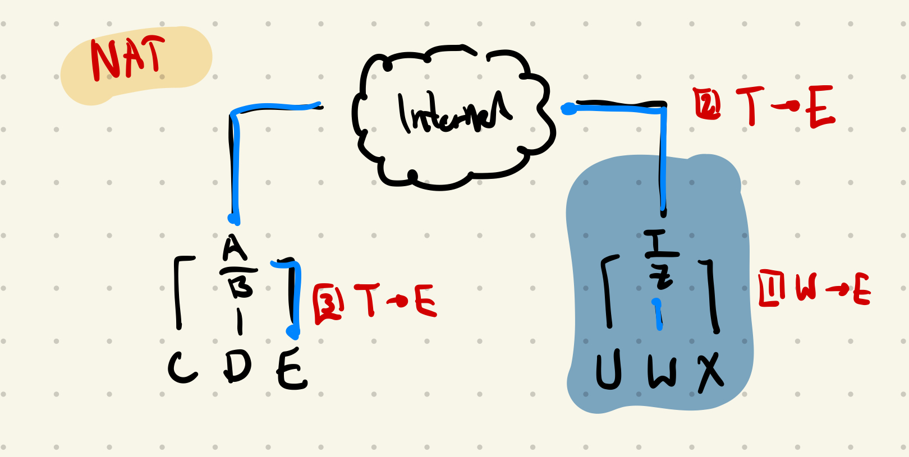
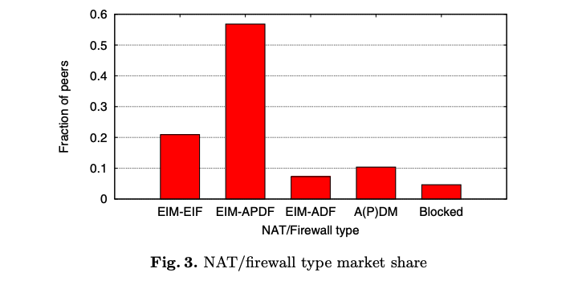
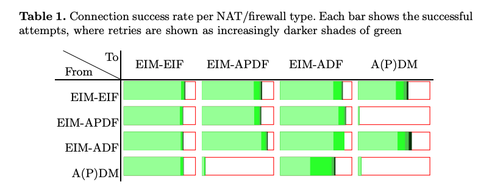

Network Address Translation
Both network and transport layer (violation of abstraction/layering) More devices than IP addresses! What do we do?
- Home router gets assigned an IP (public IP) by the ISP
- Devices connected on the local network are assigned a private IP address (usually starts with subnet mask 196.168.x.x or 10.x.x.x)
- Changes the private IP address to the public address of the router
- Changes source port to some available port
- Adds the mapping to the NAT forwarding table
- Entries correspond to private side (192.168.1.3:42301) to public side (12.13.14.15:24604)
- Includes
- Source IP
- Source Port
- Destination IP
- Destination Port
- Protocol
- NAT IP (Router public IP address)
- NAT Port (Unique)
- Actually, Port Forwarding just adds entries to the NAT forwarding table! You can set remote IP and remote port to wildcard entries (i.e. any web requests made to this port go to the specified machine)
- Max number of rows is 65535
- Any requests that come in then clone the wildcard rule and make it specific to that conversation (to avoid collisions to the NAT port)
- Entries are removed when a conversation is coming to a close (stream based protocol, detect termination packets)
- Does the inverse when it receives a packet

Hole-punching and NAT Traversal
Hole punching (or sometimes punch-through) is a technique in computer networking for establishing a direct connection between two parties in which one or both are behind firewalls or behind routers that use network address translation (NAT).
Generally done using UDP. You can do NAT traversal with TCP, but it adds another layer of complexity
Mostly used in decentralized or peer-to-peer communication as the latency incurred by relaying through a central server is prohibitively expensive for real-time activity like voice calling, file syncing, etc.
Hole-punching usually involves the use of third-party hosts that run STUN or ICE to figure out the public address of the NAT.
The idea is that to allow packets to come in from a remote endpoint, the computer behind the NAT or firewall needs to send something to the remote endpoint first. By doing so it creates a “hole” in the NAT or firewall through which communications can proceed. This even works when both sides are behind a NAT/firewall, when both sides start by punching a hole in their respective NAT/firewalls.
Types of NAT/Firewall combinations
- Endpoint-Independent Mapping (EIM): all outgoing connections from the same IP address and port have the same modified IP address and port
- Address-Dependent Mapping (ADM): each outgoing connection to a different address from the same IP address and port has a different modified IP address and port
- Address and Port-Dependent Mapping (APDM): same as ADM, instead of just address, it’s address + port
- Endpoint-Independent Filtering (EIF): all packets from remote addresses are allowed for a single endpoint on the NAT/Firewall
- Address-Dependent Filtering (ADF): only allows packets to a specific endpoint from a specific address if a computer behind the NAT/Firewall has sent a packet to that address
- Address and Port-Dependent Filtering (APDF): same as ADF but instead of just address, it’s address + port
Efficacy
From UDP NAT and Firewall Puncturing in the Wild by Gertjan Halkes and Johan Pouwelse
- Over 79% of peers on the Internet are not directly connectable
- Using a simple redez-vouz mechanism decreases this to ~15% of peers
- Keep-alive messages should be sent at least every 55 seconds to ensure that mappings/holes will remain open on almost every NAT/firewall
- Firewalls and NAT makes establishing P2P connections directly between any two machines hard
- Firewalls are frequently configured to allow only outgoing connections, based on the assumption of the client-server model of communication
- NAT hides the ‘true’ port and IP combination of any machine that is behind it, meaning that connecting to an arbitrary port is often not allowed
- Mostly useful for UDP traffic as setting up a connecting for TCP when NAT/firewall requires unusual or non-standard use of TCP and IP mechanisms, and may rely on specific NAT/firewall behaviour to work
- Detection
- NAT
- A and B report the remote address and port they see when a connection is set up. They now know their own external address and port
- If all other peers agree on peer A’s remote address and port, peer A determines they have no NAT or the NAT has EIM behaviour
- If peer A’s remote address and port are reported differ among peers, peer A determines they are behind a A(P)DM NAT
- Filtering Behaviour
- Check order of requests received when connecting to a rendez-vous server
- Side note: this many not always be true. The reason for this is that the direct connection request is not always faster than the reverse connection request which is sent through the rendez-vous peer. This is known as a Triangle Inequality Violation (TIV)
- This can happen as often as 40% of the time although lower numbers are more common
- When a peer A tries to set up a connection using rendezvous R, it will always first send a direct connection request to the remote peer B
- If the direct connection request from A to B arrives first, there is no filtering behaviour or it uses EIF
- If the rendez-vouz connection request from R to B arrives first, the filtering behaviour is most likely A(P)DF
- Check order of requests received when connecting to a rendez-vous server
- NAT


Possible explanations for a non-100% connection rate even in EIM-EIF to EIM-EIF peers
- UDP packets being dropped under high UDP packet load (especially in consumer-grade NAT/firewalls)
- Routers stop functioning when mapping tables are full (not out of the realm of possibilies, only 65535 entries)
- Use of CGNAT (NAT at the ISP level instead of home-router)
Terminology Translation Table
| Endpoint-Independent NAT Mapping (EIM) | Endpoint-Dependent NAT Mapping (ADM/EDM) | |
|---|---|---|
| Endpoint-Independent Firewall (EIF) | Full cone NAT | n/a |
| Endpoint IP-Dependent Firewall (ADF) | Restricted Cone NAT | n/a |
| Endpoint IP and Port-Dependent Firewall (APDF) | Port-restricted Cone NAT | Symmetric NAT |
Flow
Let and be the two hosts, each in its own private network; and are the two NAT devices with globally reachable IP addresses and respectively. is a public server with a well-known, globally reachable IP address.
- A and B both begin a UDP conversation with
- NAT devices and create UDP translations and assign temporary external ports and
- S looks at UDP packets to get source ports of and (through and )
- S makes pairs of external IP addresses assigned by the NAT along with temporary external ports and exchanges them between and (S passes to and to )
- and send packets to each other and their appropriate NAT devices create the entries in their lookup tables
- sends a packet to .
- examines ’s outgoing packet and adds (Source-IP-, , , ) to its translation table.
- sends a packet to .
- examines ’s outgoing packet and adds (Source-IP-, , , ) to its translation table.
- Best case scenario and should have made the entry in the translation. Worst case, both NAT devices have not yet made the entry and drop the first packet sent from
- At worst, the second packet from both and make it to each other. Holes have been “punched” in the NAT and both hosts can directly communicate through and without needing
Strategies for Robust NAT Traversal
From Tailscale
- A UDP-based protocol to augment
- Direct access to a socket in your program
- A communication side channel with your peers
- A couple of STUN servers
- A network of fallback relays (optional, but highly recommended)
Then, you need to:
- Enumerate all the
ip:portsfor your socket on your directly connected interfaces - Query STUN servers to discover WAN
ip:portsand the “difficulty” of your NAT, if any - Try using the port mapping protocols to find more WAN
ip:ports - Check for NAT64 and discover a WAN
ip:portthrough that as well, if applicable - Exchange all those
ip:portswith your peer through your side channel, along with some cryptographic keys to secure everything. - Begin communicating with your peer through fallback relays (optional, for quick connection establishment)
- Probe all of your peer’s
ip:portsfor connectivity and if necessary/desired, also execute birthday attacks to get through harder NATs - As you discover connectivity paths that are better than the one you’re currently using, transparently upgrade away from the previous paths.
- If the active path stops working, downgrade as needed to maintain connectivity.
- Make sure everything is encrypted and authenticated end-to-end.
Peer Discovery in a purely distributed manner
- Peer A sends an introduction-request to peer B. Peer B is chosen from an existing pool of neighboring peers.
- Peer B sends an introduction-response to peer A containing the address of peer C.
- Peer B sends a puncture-request to peer C containing the address of peer A.
- Peer C sends a puncture to peer A, puncturing its NAT.
When a peer doesn’t yet have a list of neighboring peers, it will select a bootstrap server for peer B. Bootstrap servers have the same peer discovery protocol as regular peers except they respond to introduction-requests for anyone.
STUN (Session Traversal Utilities for NAT)
Servers like usually run STUN. Recognized using a stun or stuns resource record.
Details how a server can determine what kind of NAT and firewall is between itself and the public Internet.
ICE (Interactive Connectivity Establishment)
Uses STUN. Provides a structured mechanism to determine the optimal communication path between two peers
TURN (Traversal Using Relays around NAT)
TURN places a third-party server to relay messages between two clients when direct media traffic between peers is not allowed by a firewall.